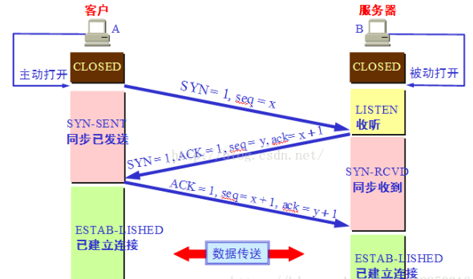
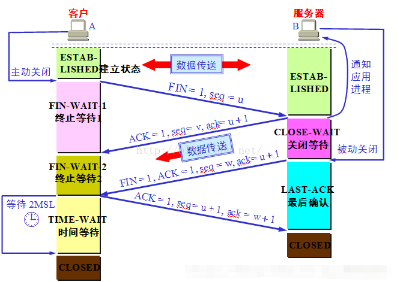

当面试官面你TCP时
1.TCP的概念
按一个问题的时间顺序来看，这可能会是面试官面的第一个问题，当然有可能会直接跳过这个问题，问你“三次握手原则”，但我觉得这个问题还是很值得深入去解释的。
百度百科的定义：
传输控制协议（TCP，Transmission Control Protocol）是一种面向连接的、可靠的、基于字节流的传输层通信协议
这里有两个比较容易关联的东西：“可靠的”、“传输层”
传输层：网络7大协议模型中的第4层，负责分割、组合数据，实现端到端的逻辑连接，数据传输，即主机到主机的层次
可靠的：何为可靠的，你就可以顺着这个思路去讲述TCP的三次握手……
2.三次握手原则

备注：C端 == 客户端、 S端 == 服务端
1.第一次握手：
建立连接时，C端 发送syn包（syn=x）到服务器，并进入SYN_SENT状态，等待服务器确认；
SYN：同步序列编号（Synchronize Sequence Numbers）
2.第二次握手：
服务器收到syn包，必须确认客户的SYN（ack=x+1），同时自己也发送一个SYN包（syn=y），即SYN+ACK包，此时服务器进入SYN_RECV状态；
3.第三次握手：
客户端收到服务器的SYN+ACK包，向服务器发送确认包ACK(ack=y+1），此包发送完毕，客户端和服务器进入ESTABLISHED（TCP连接成功）状态，完成三次握手。
以上这些流程很多地方都有讲述，都是要一定掌握的，但是仅仅知道过程如此还不够，接下来接收面试官的追问！
（1）为什么是3次握手，2次握手不行？
答：首先 C端 ==> S端 发送建立连接请求，S端返回给C端ACK确认，说明 C端 ==>S端 发送数据的过程是流畅的，成功的。但是 S端 不能确定与C端是否网络通畅，也就是S端 ==> C端不知道能否成功接受到信息，所以C端要再回复S端传过来的SYN数据，传一个ACK包回去S端，说明C==>S,S==>C都是通畅的过程，保证稳定性
（2）如果C与S成功建立连接后，但是没有传输数据，一段时间后，S端挂掉了，C端会处于什么状态：
答：ESTAB-LISHED状态，因为C端不知道S端是否关闭或者中断
（3）如果C端与S端建立连接后，C端出现故障挂掉了，S端怎么处理
答：TCP有一个保活计时器，用于保持活跃的计时，一般设置是2h左右，如果2h内C端没有任何反应或者回复，S端会发一个探测报文给C端，大概每隔一个周期发送一次，发送10次之后仍没反应，则认为C端挂掉，CLOSE连接
3.四次分手原则

注意：C端在结束时的几个状态的切换
FIN = FINISH状态
客户端进程发出连接释放报文，并且停止发送数据。释放数据报文首部标识符FIN，FIN=1，其序列号为seq=u，此时，客户端进入FIN-WAIT-1（终止等待-1）状态
服务器收到连接释放报文，发出确认报文，ACK=1，ack=u+1，并且带上自己的序列号seq=v，此时，服务端就进入了CLOSE-WAIT（关闭等待）状态。TCP服务器通知高层的应用进程，客户端向服务器的方向就要释放了，这时候处于半关闭状态，即客户端已经没有数据要发送了，但是服务器若发送数据，客户端依然要接受。这个状态还要持续一段时间，也就是整个CLOSE-WAIT状态持续的时间
（总结：S端告诉C端我知道你要分手，进入CLOSE-WAIT，但是如果S端有数据没发完，你要等我发完再分手，不能说你要分手就马上分，所以先返回一个ACK通知，但是并不是马上分手）
C端收到S端的确认请求后，进入FIN-WAIT-2（终止等待-2），等待S端什么时候告诉你可以分手（在这之前还需要接受S端发送的最后的数据）
S端发送完最后的数据，发送现在可以分手的报文，由于在CLOSE-WAIT状态，服务器很可能又发送了一些数据，此时，服务器就进入了LAST-ACK（最后确认）状态，等待C端的确认
（总结：S端告诉C端现在可以准备分手了，然后等待C端确认）
C端接收完发过来的报文了，然后回复这条释放资源的报文ACK确认，然后进入TIME-WAIT（时间等待）状态
S端接收到确认后，进入CLOSED状态，结束TCP连接。S端会比C端更快结束TCP连接
以上的过程总共分为6步解释，每步的操作都有它的含义和道理，缺一不可。
细心的人会注意到，C端结束TCP连接之前，有一个TIME-WAIT状态，为什么会要有这个状态，为什么不是马上结束？
答：
如果C端在发送最后一个ACK报文时，出现网络故障，则S端没有收到最后一个ACK报文，S端则会重复发送要开始分手的报文。
所以等待的这段时间，是为了防止S端没有收到ACK报文，又重新发来分手请求报文，来重新发送ACK报文给S端，重新告诉S端，我已经知道要分手了！
只有S端收到ACK报文才能释放TCP连接。
这种种的设计都是为了说明，这是一个可靠的链接！！！
最后更新： 2020年04月09日 13:58